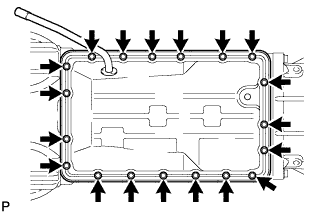

КОРПУС КЛАПАНОВ В СБОРЕ > СНЯТИЕ |
| 1. СЛЕЙТЕ ЖИДКОСТЬ ДЛЯ АВТОМАТИЧЕСКОЙ ТРАНСМИССИИ |
Снимите пробку сливного отверстия и прокладку, и слейте трансмиссионную жидкость.
Установите новую прокладку и пробку сливного отверстия.
| 2. СНИМИТЕ ПАТРУБОК МАСЛОНАЛИВНОЙ ГОРЛОВИНЫ ТРАНСМИССИИ В СБОРЕ |
 |
Снимите щуп проверки уровня масла в трансмиссии.
Отверните 2 болта и снимите маслозаливной патрубок.
Снимите кольцевое уплотнение с маслозаливного патрубка.
| 3. СНИМИТЕ МАСЛЯНЫЙ ПОДДОН АВТОМАТИЧЕСКОЙ ТРАНСМИССИИ В СБОРЕ |
|  |
Выверните 19 болтов.
 |
Вставьте инструмент для обрезки прокладки поддона картера между картером трансмиссии и масляным поддоном. Срежьте герметик и снимите поддон картера.
Исследуйте частицы в масляном поддоне.
Снимите все магниты и с их помощью соберите стальные частицы. Внимательно осмотрите посторонние включения и частицы, имеющиеся в поддоне и на магнитах, чтобы определить, какому типу износа подвергается трансмиссия.
Сталь (магнитный материал): износ подшипников, шестерен и пластины сцепления
Латунь (немагнитный материал): износ втулки
| 4. СНИМИТЕ СЕТЧАТЫЙ МАСЛЯНЫЙ ФИЛЬТР КОРПУСА КЛАПАНОВ В СБОРЕ |
 |
Выверните 4 болта и снимите сетчатый масляный фильтр.
Снимите 3 прокладки с маслоприемника с сетчатым фильтром.
| 5. ОТСОЕДИНИТЕ ЖГУТ ЭЛЕКТРОПРОВОДКИ ТРАНСМИССИИ |
 |
Выверните болт, снимите зажим датчика температуры и отсоедините датчик температуры.
Отсоедините 4 разъема от 4 электромагнитных клапанов переключения передач.
| 6. СНИМИТЕ КОРПУС КЛАПАНОВ ТРАНСМИССИИ В СБОРЕ |
 |
Выверните 20 болтов и снимите корпус клапанов.